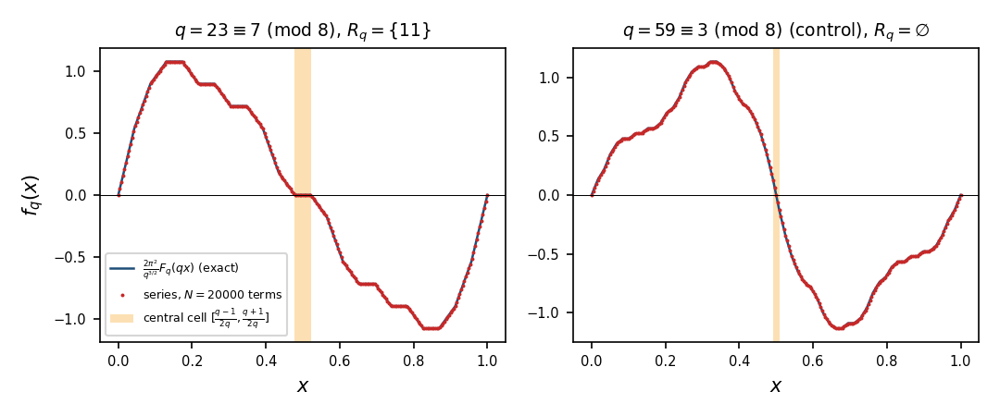
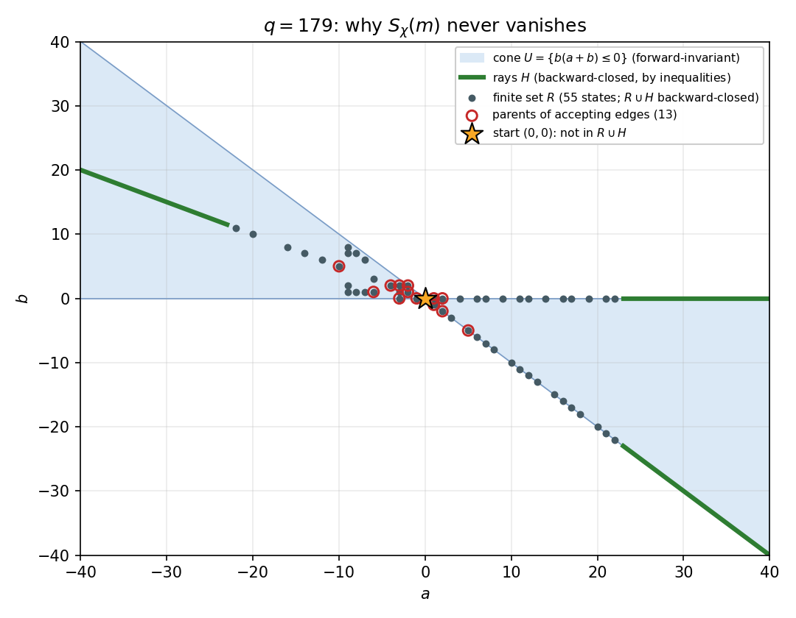

Exact zeros of weighted sums of completely multiplicative functions: blueprint
📐 Setting (copied from the paper)
For a completely multiplicative \(\varepsilon :\mathbb N\to \{ \pm 1\} \), \(S_\varepsilon (m)=\sum _{n\le m}n\, \varepsilon (n)\). Changing one sign changes \(S_\varepsilon (m)\) by an even amount, so \(S_\varepsilon (m)\equiv m(m+1)/2\pmod2\), and a zero is possible only when \(m\equiv 0\) or \(3\pmod4\); call these lengths admissible. A prime \(q\in (m/2,m]\) divides no \(n\le m\) other than \(q\) itself, so its sign enters \(S_\varepsilon (m)\) once, with weight \(q\). For a set \(Q\) of such primes, \(S_\varepsilon (m)=R_Q+\sum _{q\in Q}q\, \varepsilon (q)\), where \(R_Q\) depends only on the signs outside \(Q\); \(P_Q=\sum _{q\in Q}q\). For an odd prime \(q\) and \(s=\pm 1\) let \(\chi _{q,s}\) be the completely multiplicative function equal to the Legendre symbol \((\cdot \mid q)\) on the integers prime to \(q\), with \(\chi _{q,s}(q)=s\). For \(\chi =\chi _{q,s}\), \(C(r)=\sum _{r'\le r}\chi (r')\), \(T(r)=\sum _{r'\le r}r'\chi (r')\) \((0\le r{\lt}q)\), \(T_q=T(q-1)\), and \(R_q=\{ 0\le r{\lt}q:\ T_q+q\, C(r)=0=T(r)\} \).
1 Statements
For every \(m\ge 3\) with \(m\equiv 0\) or \(3\pmod4\) there is a completely multiplicative \(\varepsilon :\mathbb N\to \{ \pm 1\} \) with
🆕 Classical and new: new. With the weight n the picture of the unweighted sums (Aymone) is reversed. The proof uses Sárközy's progressions in subset sums (Lemma 2.2(c), a cited theorem).
↳ Used in: Proposition 3.1, Corollary 5.2
Table 1 summarises the three ranges.
Up to \(20000\). For each admissible \(m\le 20000\) a function \(\varepsilon \) with \(S_\varepsilon (m)=0\) is exhibited and the sum is recomputed exactly: for all but four lengths by starting from \(\varepsilon (2)=\varepsilon (3)=-1\) (with at most two signs at primes \(\le 7\) changed), balancing the primes of \((\sqrt m,m/2]\) and solving (2) exactly with the primes of \((m/2,m]\); the lengths \(12,15,19,23\) by exhaustive search.
From \(5000\) to \(10^8\). Cut \([5000,10^8)\) into \(104\) blocks \([a_j,b_j]\),
and let \(Q\) be the primes of \((b_j/2,a_j]\), which lie in \((m/2,m]\) for every \(m\) in the block; the other primes of \((m/2,m]\) are among the random signs of Lemma 2.1. Each block carries a certificate: a prime \(q_0\in Q\) and disjoint pairs in \(Q\) as in Lemma 2.2(b), with \(2H-q_0+2\ge b\). Every other prime of \(Q\) is at most \(a\le b\), so Lemma 2.2(a) extends the interval to \([\alpha ,P_Q-\alpha ]\) with \(\alpha =U+q_0-1\). The block is proved for all its \(m\) once \(D=P_Q-2\alpha \) exceeds \(B_*(b)\ge B_*(m)\), which follows from the integer inequality \(90D^2{\gt}b^3(130+7e)\) with \(e=\lceil \log _2b\rceil \) (as \(\log b{\lt}7e/10\)). All \(104\) certificates pass; the bound \(b^3(130+7e)/(90D^2)\) on \(B_*(b)^2/D^2\) is at most \(0.445\), reached at the first block.
From \(10^8\) on. Let \(M\ge 10^8\), \(L=\log M\), \(Q\) the \(N\) primes of \((M/2,M]\). By Dusart’s bounds \(x/(\log x-1)\le \pi (x)\) for \(x\ge 5393\) and \(\pi (x)\le x/(\log x-1.1)\) for \(x\ge 60184\) [ Dus10 , Thm. 6.9, (6.6) ] , \(N\ge M/(2L)\) and \(P_Q\ge NM/2\ge M^2/(4L)\). Let \(X\subset Q\) have \(n=\lfloor N/8\rfloor \ge M/(17L)\) elements and take \(\ell =4M\): the hypothesis of Lemma 2.2(c) follows from \(n^2\ge 48M\log _2(4M/n)\), which holds once \(M\ge 13872L^2\log _2(68L)\), that is from \(M\approx 4.4\cdot 10^7\). This gives a progression \(a+js\), \(0\le j{\lt}\ell \), of step \(s\le 4M/n\le 68L\) whose terms are sums of distinct elements of \(X\), so \(a\le 24M^2/n\). Add a set \(Y\) of \(s-1\) further primes of \(Q\). (i) As \(s\le 68L{\lt}M/2\), every prime of \(Q\) is a unit modulo \(s\). (ii) The subset sums of \(s-1\) units meet every class modulo \(s\): adding a unit \(u\) to a set \(A\ni 0\) of classes gives \(A\cup (A+u)\), which is strictly larger unless \(A+u=A\), and then \(A\) is invariant under the generator \(u\) of \(\mathbb {Z}/s\mathbb {Z}\), so \(A=\mathbb {Z}/s\mathbb {Z}\); starting from \(\{ 0\} \), \(s-1\) units reach all \(s\) classes. (iii) So for each class \(c\) there is \(y_c\in \Sigma (Y)\), \(y_c\equiv c\), with \(0\le y_c\le B:=(s-1)M\); an integer \(x\in [a+B,a+(\ell -1)s]\) is \(y_c\) plus the term \(x-y_c\) of the progression, with \(c\equiv x-a\), and \(\Sigma (X\cup Y)\) contains the whole interval \([\alpha ,\alpha +w]=[a+B,a+(\ell -1)s]\), with \(\alpha \le 28M^2/n\) and \(w=(\ell -1)s-(s-1)M\ge M\). The remaining primes, each at most \(M\), extend it by Lemma 2.2(a); they are \(N-n-s+1\ge \tfrac 78N-s\) primes above \(M/2\), while \(X\cup Y\) weighs at most \((\tfrac 18N+s)M\). (iv) As \(N\ge M/(2L)\) and \(s\le 68L\), \(5N{\gt}24s\), which is \((\tfrac 78N-s)\tfrac M2{\gt}(\tfrac 18N+s)M\): the remaining primes carry more than half of \(P_Q\), and the symmetry closes the interval to \([\alpha ,P_Q-\alpha ]\). With \(K=2\alpha \le 56M^2/n\) and Lemma 2.1,
the right side being \(0.02669\) at \(M=10^8\) and both terms decreasing in \(M\). So \(|R_Q|{\lt}P_Q-K\) and a zero exists.
💡 In plain words (commentary, not part of the paper)
Changing one sign changes \(S_\varepsilon (m)=\sum _{n\le m}n\, \varepsilon (n)\) by an even amount, so a zero is only possible when \(m\equiv 0\) or \(3\pmod4\) (the admissible lengths). The theorem says parity is the only obstruction. The key observation: a prime \(q\in (m/2,m]\) divides no other \(n\le m\), so its sign enters the sum once, with weight \(q\). Choose the other signs so that the rest of the sum is small (Lemma 2.1), and show that the subset sums of these large primes fill a long interval (Lemma 2.2); then the large primes can cancel the rest exactly. The function depends on \(m\) (\(S_\varepsilon (4)-S_\varepsilon (3)=4\)). The proof runs in three overlapping ranges (Table 1 of the paper): explicit functions up to \(20000\), \(104\) block certificates on \([5000,10^8)\), and Sárközy’s progressions from \(10^8\) on.
🛡️ Evidence & scope
Scope at a glance (each row is one range; details below).
|
Range of \(m\) |
How it is established |
Status |
|
\(3\le m\le 20000\) |
an explicit \(\varepsilon \) for each of the \(10000\) |
proved by exact computation, |
|
admissible lengths, the sum recomputed exactly |
rechecked by an independent program |
|
|
\(5000\le m{\lt}10^8\) |
\(104\) block certificates applying Lemmas 2.1 |
certificates checked exactly by program; |
|
and 2.2(a,b) |
the lemmas: written proofs, (b) also in Lean |
|
|
\(m\ge 10^8\) |
written proof; its inequality is evaluated |
|
|
and Dusart’s prime bounds |
on a grid, which illustrates but does not prove |
Not formalized in Lean as a whole. One ingredient, Lemma 2.2(b), is, in a slightly more general form (see Lemma 2.2(b)).
Range \(3\le m\le 20000\), checked by program II_ruta_A_exacta.py (supplement): an explicit \(\varepsilon \) with \(S_\varepsilon (m)=0\) for each of the \(10000\) admissible lengths, the sum recomputed; \(9996\) by the route of the proof, \(m=12,15,19,23\) by exhaustive search. Output II_ruta_A_exacta_OUT.txt; witnesses stored in II_testigos_A.txt.
Range \(5000\le m{\lt}10^8\), checked by program II_certificados_A.py: \(104\) blocks, \(2128\) pairs, maximum of \(B_*^2/D^2\) bound \(0.4449\). Output II_certificados_A_OUT.txt.
Independent checker II_comprobador.py (standard library only, imports none of the other programs, reads only the stored files): \(10000\) witnesses recomputed exactly; \(104\) blocks contiguous from \(5000\) to \(99999999\); every hypothesis of Lemma 2.2(a,b) and \(90D^2{\gt}b^3(130+7e)\) in integers; maximum \(0.444939\). Verdict PASS, output II_comprobador_OUT.txt.
Range \(m\ge 10^8\): proof on paper, resting on a cited theorem (Lemma 2.2(c)) and Dusart’s prime bounds. Its numerical inequalities are evaluated by II_cola_analitica.py: \((B_*+K)/P_Q\) bound \(0.026689\) at \(M=10^8\); on a grid of \(641\) points from \(10^8\) to \(10^{40}\) the hypothesis holds and the bounds decrease. Output II_cola_analitica_OUT.txt. This is a grid evaluation, not a proof for every \(M\); the paper’s argument for all \(M\) is monotonicity.
On \(\Omega =\{ \pm 1\} ^{\mathcal P}\), the sign patterns on the primes, let \(\mathcal Z_\infty \) be the set of \(\varepsilon \) with \(S_\varepsilon (m)=0\) for infinitely many \(m\). With the product topology, \(\mathcal Z_\infty \) is a dense \(G_\delta \). With independent fair signs, \(\Pr (\mathcal Z_\infty )=0\).
🆕 Classical and new: new; the measure half uses the anticoncentration theorem of Sárközy and Szemerédi.
↳ Not used by another result of the paper.
The set \(U_M\) of \(\varepsilon \) with a zero at some admissible \(m\ge M\) is open, each condition involving finitely many signs, and dense by Proposition 3.1; \(\mathcal Z_\infty =\bigcap _MU_M\) is a dense \(G_\delta \) by the Baire category theorem, the space of all \(\varepsilon \) being compact and metrizable. For the measure, condition on every sign outside the primes \(Q\) of \((m/2,m]\): by (2), \(S_\varepsilon (m)=R_Q+\sum _{q\in Q}q\, \varepsilon (q)\) with distinct weights, and the theorem of Sárközy and Szemerédi [ SS65 ] , [ Ngu12 , Thm. 1.1 ] bounds the probability of any single value by \(O(|Q|^{-3/2})=O\bigl((\log m/m)^{3/2}\bigr)\). The series converges, and the first Borel–Cantelli lemma gives \(\Pr (\mathcal Z_\infty )=0\).
💡 In plain words (commentary, not part of the paper)
Here \(\Omega =\{ \pm 1\} ^{\mathcal P}\) is the set of sign patterns on the primes (each pattern is one completely multiplicative \(\varepsilon \)), and \(\mathcal Z_\infty \) the patterns whose sum \(S_\varepsilon (m)\) vanishes for infinitely many \(m\). For a fixed function, measure and category disagree. Topologically, zeros are generic: a zero at some large \(m\) can be reached from any finite prefix of signs (Proposition 3.1), so “has a zero beyond \(M\)” is open and dense, and Baire gives a dense \(G_\delta \). In probability, zeros are rare: once all other signs are fixed, \(S_\varepsilon (m)\) is a fixed number plus \(\sum _{q}q\, \varepsilon (q)\) over the primes of \((m/2,m]\), with distinct weights, and Sárközy–Szemerédi bound the chance of hitting any single value by \(O\bigl((\log m/m)^{3/2}\bigr)\), which is summable: Borel–Cantelli gives probability \(0\). Without the weight, Aymone’s theorem gives zeros infinitely often almost surely.
🛡️ Evidence & scope
Proof on paper only. No program checks the measure or category statement, and it is not formalized.
The density step uses Proposition 3.1; see its guarantees.
Let \(q\equiv 7\pmod8\) be prime and \(\chi =\chi _{q,s}\) with \(s=\pm 1\). Then \(S_\chi \bigl(\tfrac {q^j-1}{2}\bigr)=0\) for every \(j\ge 1\), and Conrey’s function \(f_q(x)=\sum _{n\ge 1}(\frac nq)\sin (2\pi nx)/n^2\) vanishes identically on the interval \(\bigl[\frac{q-1}{2q},\frac{q+1}{2q}\bigr]\).
🆕 Classical and new: the case j = 1 is classical (Lebesgue; Aebi–Cairns): the equality of the sums of quadratic residues and non-residues below q/2. New: the iteration in j and the null interval of Conrey's series.
↳ Not used by another result of the paper.
The zeros \(S_\chi ((q^j-1)/2)=0\) are Corollary 4.3(b). By the same corollary \((q-1)/2\in R_q\), so \(F_q\) vanishes identically on the cell \([(q-1)/2,(q+1)/2]\), and \(f_q\) on \(\bigl[\frac{q-1}{2q},\frac{q+1}{2q}\bigr]\).
🖼️ Figure

Conreyś sine series \(f_q\) for \(q=23\equiv 7\pmod8\), where it vanishes identically on the central cell, and for the control \(q=59\equiv 3\pmod8\), where it does not. Exact curve from \(F_q\) and the series truncated at \(20000\) terms (figuras/fig_conrey_celda.py).
💡 In plain words (commentary, not part of the paper)
For an odd prime \(q\) and \(s=\pm 1\), \(\chi _{q,s}\) is the completely multiplicative function equal to the Legendre symbol \((\cdot \mid q)\) on integers prime to \(q\), with \(\chi _{q,s}(q)=s\). In base \(q\), \((q^j-1)/2\) is the number with \(j\) digits all equal to \((q-1)/2\). By the digit recursion (Theorem 4.1) the sum vanishes along any string of digits from the set \(R_q\) (Lemma 4.3, first statement), so it is enough that \((q-1)/2\in R_q\). That is where \(q\equiv 7\pmod8\) enters: then \(\chi (2)=1\), the Euler factor \(\chi (2)^{-1}-1\) of Theorem 4.2 is \(0\), and the weighted half sum \(T(\frac{q-1}2)\) vanishes; the class number formula, equation (3) of the paper, gives the other condition, \(T_q+q\, C(\frac{q-1}2)=0\). The second half is the same fact read through Conrey’s formula \(f_q(x)=\frac{2\pi ^2}{q^{3/2}}F_q(qx)\) (Section 4.3 of the paper): \(F_q\) is linear on each cell \([r,r+1]\) and vanishes on it exactly when \(r\in R_q\). The case \(j=1\) is classical (Lebesgue; Aebi–Cairns).
🛡️ Evidence & scope
Scope at a glance (three different checks, on three different sets of primes; details below).
|
What is checked |
On which cases |
What it shows |
|
\((q-1)/2\in R_q\) |
the \(78\) primes \(q\equiv 7\pmod8\), \(q\le 2000\) |
finite, exact; for every \(q\): written proof |
|
(Theorem 4.2 and the class number formula) |
||
|
\(S_\chi \bigl(\frac{q^j-1}{2}\bigr)=0\) |
\(j\le 8\), both \(s\), only the \(7\) primes |
finite, exact; for every \(j\): the propagation |
|
\(q=7,23,31,47,71,79,103\) |
step, in Lean, from the membership above |
|
|
\(f_q=0\) on the central cell |
interior points for \(q=7,23,31,47\); |
an illustration in floating point, not a proof; |
|
controls \(q=59,83\) |
the statement: written proof (Conrey’s Theorem 4) |
Partly formalized in Lean: the propagation step (digits in \(R_q\) give zeros) is SegmentoII.zeros_from_digits, which takes as hypotheses membership in \(R_q\) and the properties of \(\chi \) it uses (complete multiplicativity, periodicity modulo \(q\), \(C(q-1)=0\)). The input \((q-1)/2\in R_q\) (Theorem 4.2 and the class number formula) and the statement about \(f_q\) are proof on paper only; the latter rests on Conrey’s Theorem 4, which the paper applies to primes \(q\equiv 7\pmod8\) because its proof uses only that the character is real, odd and primitive.
Checked by program II_ceros_R.py: \((q-1)/2\in R_q\) for all \(78\) primes \(q\equiv 7\pmod8\), \(q\le 2000\), \(0\) failures (II_ceros_R_OUT.txt).
Checked by segmento_II.py autotest: \(S_\chi \bigl(\frac{q^j-1}{2}\bigr)=0\) for \(j\le 8\), both \(s\), at \(q=7,23,31,47,71,79,103\) (autotest_OUT.txt).
Numerical illustration, not a proof: II_celdas_nulas_conrey.py evaluates the truncated series at interior points of the central cell for \(q=7,23,31,47\) (values below \(1.4\cdot 10^{-12}\) in absolute value, truncation scale \(5\cdot 10^{-7}\)), with control cells at \(q=59,83\) (\(q\equiv 3\pmod8\)) where it does not vanish identically (values \(\pm 6.5\cdot 10^{-2}\) and \(\pm 3.9\cdot 10^{-2}\) off the midpoint of the cell) (II_celdas_nulas_conrey_OUT.txt).
2 Theorems A and B
Give the primes outside \(Q\) independent uniform signs. Then
so some choice has \(|R_Q|\le B_*(m):=\tfrac 13m^{3/2}\sqrt{\log m+13}\).
↳ Used in: Theorem A
\(\mathbb E\, \varepsilon (n)\varepsilon (k)\) is \(1\) if \(nk\) is a square and \(0\) otherwise. Writing \(n=da^2\) with \(d\) squarefree, \(\mathbb E\, S_\varepsilon (m)^2=\sum _db_m(d)^2\) with \(b_m(d)=d\sum _{j\le \sqrt{m/d}}j^2\), and \(\mathbb E\, R_Q^2\) is the same sum without the terms \(d=q\in Q\), whose class contains only \(n=q\). With \(J=\lfloor \sqrt{m/d}\rfloor \), \(\sum _{j\le J}j^2\le J^3/3+J^2/2+J/6\), and \(dJ^2\le m\), \(dJ\le \sqrt{md}\le m\) give \(b_m(d)\le m^{3/2}/(3\sqrt d)+2m/3\). Squaring and summing over \(d\le m\) with \(\sum 1/d\le 1+\log m\), \(\sum d^{-1/2}\le 2\sqrt m\) and at most \(m\) terms gives \(m^3\bigl((1+\log m)+8+4\bigr)/9\).
💡 In plain words (commentary, not part of the paper)
Notation from the paper: \(Q\) is a set of primes in \((m/2,m]\), and equation (2) splits \(S_\varepsilon (m)=R_Q+\sum _{q\in Q}q\, \varepsilon (q)\), where \(R_Q\) depends only on the signs outside \(Q\). The lemma says that a random choice of those signs makes \(R_Q\) small on average, so some choice makes \(|R_Q|\le B_*(m)=\frac13m^{3/2}\sqrt{\log m+13}\). Why: for random signs, \(\mathbb E\, \varepsilon (n)\varepsilon (k)\) is \(1\) when \(nk\) is a square and \(0\) otherwise. Grouping \(n=da^2\) by its squarefree part \(d\) turns the second moment into a sum of squares \(\sum _d b_m(d)^2\), which elementary bounds control. Its role: \(B_*(m)\) is of order \(m^{3/2}\) up to a logarithm, while the primes of \((M/2,M]\) weigh at least \(M^2/(4\log M)\) (the paper’s bound for \(M\ge 10^8\)), so they have room to cancel \(R_Q\).
🛡️ Evidence & scope
Proof on paper only (not formalized).
Checked numerically by program II_segundo_momento.py (supplement): \(\mathbb E\, S_\varepsilon (m)^2\) evaluated from the exact squarefree-kernel formula, in double precision, against the bound, at \(24176\) values of \(m\) up to \(99999999\); maximum ratio \(0.4288\), at \(m=99999999\) (II_segundo_momento_OUT.txt). The program measures \(\mathbb E\, S_\varepsilon (m)^2\); \(\mathbb E\, R_Q^2\) is the same sum with the terms \(d\in Q\) removed, hence not larger.
Write \(\Sigma (A)\) for the set of subset sums of a finite set \(A\) of positive integers.
If \(\Sigma (A)\supseteq [\alpha ,\beta ]\) and \(x\notin A\), \(0{\lt}x\le \beta -\alpha +1\), then \(\Sigma (A\cup \{ x\} )\supseteq [\alpha ,\beta +x]\). As \(\Sigma (A)\) is symmetric under \(x\mapsto P_A-x\), \(\Sigma (A)\supseteq [\alpha ,\beta ]\) with \(\beta \ge P_A/2\) implies \(\Sigma (A)\supseteq [\alpha ,P_A-\alpha ]\).
(pairs) Let \(q_0,u_1,v_1,\dots ,u_t,v_t\) be distinct positive odd integers, \(d_j=(v_j-u_j)/2\) with \(1\le d_j\le 1+d_1+\dots +d_{j-1}\), \(H=\sum d_j\), \(U=\sum u_j\), and \(q_0\le 2H+1\). Then \(\Sigma (\{ q_0,u_j,v_j\} )\supseteq [U+q_0-1,\ U+2H+1]\).
(Sárközy, with Lev’s constants [ BW21 , Thm. 4.23 ] ) If \(X\) is a set of \(n\) positive integers with maximum \(x^*\) and \(4x^*\le \ell \le n^2/(12\log _2(4x^*/n))\), then \(\Sigma (X)\) contains an arithmetic progression of \(\ell \) terms and step \(s\le 4x^*/n\), each term a sum of at most \(6\ell /n\) distinct elements of \(X\).
↳ Used in: Theorem A
(a) is immediate. (b) The condition on the \(d_j\) makes their subset sums exactly \(\{ 0,\dots ,H\} \); choosing one element of each pair gives \(U+2\{ 0,\dots ,H\} \), and adding \(q_0\) or not fills the other parity: an integer \(x\) of the interval with \(x-U\) even is \(U+2k\), \(k\le H\), and one with \(x-U\) odd is \(U+q_0+2k\) with \(0\le k\le H\). (c) is the cited theorem: as \(\log _2y\ge \log y\) for \(y\ge 1\), its hypothesis with \(\log _2\) implies the hypothesis with the natural logarithm, so (c) holds whichever logarithm the source intends.
💡 In plain words (commentary, not part of the paper)
\(\Sigma (A)\) is the set of subset sums of \(A\), and \(P_A\) the sum of all of \(A\). The signed sums \(\sum _{q\in Q}\pm q\) are exactly the numbers \(P_Q-2x\) with \(x\in \Sigma (Q)\), so a long interval inside \(\Sigma (Q)\) gives every value of the right parity in a long symmetric window, which is what the proof of Theorem A needs. The lemma collects three ways to get that interval. (a) An element no larger than the interval’s length plus one extends it; and since \(\Sigma (A)\) is symmetric under \(x\mapsto P_A-x\), reaching half of \(P_A\) is enough. (b) Pairs \(u_j{\lt}v_j\) whose half-gaps \(d_j\) grow slowly enough fill an interval; this builds the block certificates. (c) Sárközy’s theorem, with explicit constants, gives a long progression inside \(\Sigma (X)\); it covers all \(m\ge 10^8\). Part (b) needs \(d_1=1\), a pair of twin primes, which no theorem guarantees in every interval: so the certificates alone cannot cover all \(m\), and from \(10^8\) on the proof uses (c), which is available from about \(4.4\cdot 10^7\).
🛡️ Evidence & scope
Part (b) formalized in Lean, in a slightly more general form (node Lemma 2.2(b)).
Part (a): proof on paper (“immediate”); its hypotheses are checked for every prime of every block by II_comprobador.py (II_comprobador_OUT.txt, PASS).
Part (c): a cited theorem (Bringmann–Wellnitz, Thm. 4.23); not checked. The inequality that verifies its hypothesis in the proof of Theorem A is evaluated by II_cola_analitica.py (holds from \(M\approx 4.393\cdot 10^7\)).
Part (b) against the true subset sums: II_lema_pares_directo.py, blocks \(1\)–\(8\) (\(m\) from \(5000\) to \(10725\)), all covered (II_lema_pares_directo_OUT.txt).
✅ Checked when this page was built: SegmentoII.lean compiles with Lean 4.30.0-rc2, no errors, no sorry. Axioms — complete_range, pairs_subset_sum: propext, Classical.choice, Quot.sound.
Reproduce: Lean 4.30.0-rc2, Mathlib 701fb6e9c3b9; in that Lean project, lake env lean SegmentoII.lean (SHA-256 of the compiled file: 3c5a9eac3055c58e…; a source page on this site may show it with comments edited, under its own hash).
↳ Used in: Lemma 2.2
Formalized in Lean (see the linked declarations).
💡 In plain words (commentary, not part of the paper)
A sequence \(d_1,d_2,\dots \) in which each term is at most one more than the sum of the earlier ones represents every integer from \(0\) to its total as a subset sum: by induction, adding a term \(d_j\) to the interval \([0,H]\) already reached gives \([0,H]\cup [d_j,H+d_j]\), and \(d_j\le H+1\) leaves no gap. The pairs version: pick one element of each pair \((u_j,v_j=u_j+2d_j)\); the choices realise \(U+2y\) for every \(0\le y\le H\), the even offsets from \(U=\sum u_j\), and adding an odd \(q_0\) or not supplies the other parity.
🛡️ Evidence & scope
Formalized in Lean 4 + Mathlib: SegmentoII.complete_range (indexed form; also complete_list) and SegmentoII.pairs_subset_sum. No sorry in the file; the supplement’s README states standard axioms only, and the file ends with #print axioms for each theorem.
What the Lean statement is, exactly: pairs_subset_sum says every \(x\) in \([U+q_0-1,\, U+2H+1]\) equals (\(q_0\) or \(0\)) plus one chosen element of each pair. The step “this is a subset sum of \(\{ q_0,u_j,v_j\} \)” uses that these numbers are distinct, which the paper assumes and the Lean file states only in a comment. The Lean versions assume less than the paper: neither \(d_j\ge 1\) nor \(q_0\le 2H+1\), and of the numbers only that \(q_0\) is odd (not that the \(u_j,v_j\) are odd, positive or distinct). In the proof of Theorem A the numbers are distinct primes, which II_comprobador.py checks for every block.
Checked by program II_lema_pares_directo.py against the true subset sums of the first \(8\) blocks (II_lema_pares_directo_OUT.txt).
Let \(F\) be a finite set of primes and \(\varepsilon _0:F\to \{ \pm 1\} \). There is \(M(F)\) such that for every admissible \(m\ge M(F)\) some \(\varepsilon \) with \(\varepsilon |_F=\varepsilon _0\) has \(S_\varepsilon (m)=0\). For \(F=\{ 2,3,5,7\} \) one may take \(M(F)=60000\).
↳ Used in: Theorem B
For \(m{\gt}2\max F\) the set \(F\) is disjoint from \(Q\). Conditioning on the event \(\varepsilon |_F=\varepsilon _0\), of probability \(2^{-|F|}\), multiplies \(\mathbb E\, R_Q^2\) by at most \(2^{|F|}\), since \(R_Q^2\ge 0\); the proof of Theorem A then goes through with \(2^{|F|/2}B_*\) in place of \(B_*\), and both \(B_*/P_Q\) and \(K/P_Q\) tend to \(0\). For \(F=\{ 2,3,5,7\} \) the factor is \(4\): every block with \(b\ge 60000\) satisfies \(90D^2{\gt}16\, b^3(130+7e)\), and beyond \(10^8\), \(4B_*/P_Q+K/P_Q{\lt}0.07\).
💡 In plain words (commentary, not part of the paper)
Fixing the signs of finitely many primes in advance does not prevent zeros, once \(m\) is large. The reason is in the second moment of Lemma 2.1: conditioning on an event of probability \(2^{-|F|}\) can multiply \(\mathbb E\, R_Q^2\) by at most \(2^{|F|}\), since \(R_Q^2\ge 0\), so \(B_*\) is replaced by \(2^{|F|/2}B_*\), and the proof of Theorem A still closes for large \(m\), both \(B_*/P_Q\) and \(K/P_Q\) tending to \(0\). For \(F=\{ 2,3,5,7\} \) the factor on \(B_*\) is \(4\), and the paper verifies the strengthened inequalities explicitly, giving \(M(F)=60000\). This proposition is the density half of Theorem B: any finite prefix of signs can be continued to a zero at a large length.
🛡️ Evidence & scope
General \(F\): proof on paper only.
\(F=\{ 2,3,5,7\} \), block range, checked by program: the inequality \(90D^2{\gt}16\, b^3(130+7e)\) at the \(78\) blocks with \(b\ge 60000\), by II_certificados_A.py and again by the independent II_comprobador.py (PASS; II_comprobador_OUT.txt).
\(F=\{ 2,3,5,7\} \), beyond \(10^8\): II_cola_analitica.py gives \(4B_*/P_Q+K/P_Q=0.06799\) at \(M=10^8\), and the same maximum on the grid up to \(10^{40}\) (\({\lt}0.07\)). Grid evaluation; the argument for all \(M\) is on paper.
3 The digit recursion
For \(k\ge 0\) and \(0\le r{\lt}q\),
✅ Checked when this page was built: SegmentoII.lean compiles with Lean 4.30.0-rc2, no errors, no sorry. Axioms — digit_recursion: propext, Classical.choice, Quot.sound.
Reproduce: Lean 4.30.0-rc2, Mathlib 701fb6e9c3b9; in that Lean project, lake env lean SegmentoII.lean (SHA-256 of the compiled file: 3c5a9eac3055c58e…; a source page on this site may show it with comments edited, under its own hash).
🆕 Classical and new: for the unweighted sums the recursion is in Borwein–Choi–Coons and in Klurman–Mangerel–Pohoata–Teräväinen; the weight adds a term, and with it the zeros.
↳ Used in: Corollary 4.3, first statement, Corollary 4.3, Proposition 4.4, Corollary 4.5, Theorem N1 (new)
The \(n\le qk+r\) prime to \(q\) are \(jq+r'\) with \(j{\lt}k\), \(1\le r'{\lt}q\), and \(kq+r'\) with \(r'\le r\); as \(\chi (jq+r')=\chi (r')\) and \(C(q-1)=0\), they contribute \(kT_q+kq\, C(r)+T(r)\). The multiples \(jq\), \(j\le k\), contribute \(\sum _jjq\, s\chi (j)=sq\, S_\chi (k)\).
💡 In plain words (commentary, not part of the paper)
Notation: \(\chi =\chi _{q,s}\); for \(0\le r{\lt}q\), \(C(r)=\sum _{r'\le r}\chi (r')\), \(T(r)=\sum _{r'\le r}r'\chi (r')\), and \(T_q=T(q-1)\). Split the integers \(n\le qk+r\) into multiples of \(q\) and the rest. The multiples \(jq\), \(j\le k\), give \(sq\, S_\chi (k)\), because \(\chi (jq)=s\, \chi (j)\). The rest come in \(k\) complete blocks of residues plus a partial block up to \(r\); since \(\chi \) only sees the residue and \(C(q-1)=0\), they give \(k(T_q+q\, C(r))+T(r)\). So \(S_\chi \) at \(m\) is determined by \(S_\chi \) at \(m\) with its last base-\(q\) digit removed, plus a term that depends on that digit and, linearly, on the remaining number \(k\). The zeros of Corollary C, Corollary 4.3, Proposition 4.4 and Corollary 4.5 are all read off this recursion. The unweighted recursion, \(\sum _{n\le qk+r}\chi (n)=s\sum _{n\le k}\chi (n)+C(r)\), is in Borwein–Choi–Coons (for \(s=1\)) and Klurman–Mangerel–Pohoata–Teräväinen (any \(s\)); the weight brings the factor \(q\) and the term \(k(T_q+qC(r))\).
🛡️ Evidence & scope
Formalized in Lean 4 + Mathlib: SegmentoII.digit_recursion. Hypotheses in Lean: \(q\ge 2\), \(\chi :\mathbb N\to \mathbb {Z}\) completely multiplicative, \(\chi (jq+r)=\chi (r)\) for \(1\le r{\lt}q\), \(\chi (q)=s\), and \(C(q-1)=0\); neither primality of \(q\) nor values \(\pm 1\) is assumed. No sorry; standard axioms (supplement README). The file does not prove that \(\chi _{q,s}\) satisfies these hypotheses (elementary properties of the Legendre symbol).
Checked by program II_ceros_digitos.py: the recursion at every \(m\le 10^7\) for the primes \(5\le q\le 73\) and \(q=163\), both signs (II_ceros_digitos_OUT.txt).
Let \(f\) be odd, let \(\chi \) be an odd Dirichlet character modulo \(f\), and put \(B_{1,\chi }=f^{-1}\sum _{a=1}^{f}a\, \chi (a)\). Then
If moreover \(\chi \) is primitive, so that \(B_{1,\chi }\neq 0\), the sum vanishes if and only if \(\chi (2)=1\).
🆕 Classical and new: not new: in Kanemitsu–Kuzumaki and in Kučera.
↳ Used in: Corollary 4.3, Corollary 4.5
Write \(T=\sum _{c{\lt}f/2}c\chi (c)\), \(U=\sum _{c{\lt}f/2}\chi (c)\), \(W=\sum _{c\ \mathrm{even}}\chi (c)\) and \(X=\sum _{c\ \mathrm{even}}c\chi (c)\), all over \(1\le c{\lt}f\). Pairing \(b\mapsto f-b\) exchanges odd and even residues, since \(f\) is odd, and \(\chi (f-b)=-\chi (b)\); hence \(\sum _{b\ \mathrm{odd}}b\chi (b)=-fW+X\), and adding \(X\) gives \(fB_{1,\chi }=2X-fW\), that is \(X=\tfrac f2(B_{1,\chi }+W)\). Substituting \(c=2c'\) in the even sums, \(W=\chi (2)U\) and \(X=\chi (2)\cdot 2T\). Finally \(\sum _{b}\chi (b)=0\) splits as \(\sum _{\mathrm{odd}}+\sum _{\mathrm{even}}\), and the first equals \((2\chi (2)-1)B_{1,\chi }\) by the same substitution applied to \(\chi (2)fB_{1,\chi }=\sum _a a\chi (2a)\); so \(-\chi (2)U=(2\chi (2)-1)B_{1,\chi }\), i.e. \(U=(\chi (2)^{-1}-2)B_{1,\chi }\). Putting the three together, \(2\chi (2)T=\tfrac f2\bigl(B_{1,\chi }+\chi (2)U\bigr)\) gives the displayed formula. For \(\chi \) primitive and odd, \(B_{1,\chi }=-L(0,\chi )\neq 0\).
💡 In plain words (commentary, not part of the paper)
Here \(B_{1,\chi }=f^{-1}\sum _{a=1}^{f}a\, \chi (a)\). The weighted sum of an odd character over the first half of the residues equals \(B_{1,\chi }\) times \(\frac f2(\chi (2)^{-1}-1)\), that is, half the full weighted sum \(\sum _{a\le f}a\, \chi (a)=f\, B_{1,\chi }\) times \(\chi (2)^{-1}-1\), the Euler factor at \(2\). The proof pairs \(b\) with \(f-b\), which swaps odd and even residues because \(f\) is odd and flips the sign because \(\chi \) is odd, substitutes \(c=2c'\) in the even sums, which brings out \(\chi (2)\), and uses \(\sum _b\chi (b)=0\). For primitive \(\chi \), \(B_{1,\chi }=-L(0,\chi )\neq 0\), so the half sum vanishes exactly when \(\chi (2)=1\). This criterion gives \(T(\frac{q-1}2)=0\) when \(q\equiv 7\pmod8\); with the class number formula it puts the digit \((q-1)/2\) into \(R_q\) (Corollary C). The identity is not new: it is in Kanemitsu–Kuzumaki and Kučera; the paper gives a short proof for the half sum. Its unweighted twin is the Jacobi–Dirichlet class number formula, equation (3) of the paper.
🛡️ Evidence & scope
Proof on paper only (not formalized).
Checked by segmento_II.py autotest, exactly in \(\mathbb {Z}[\zeta _N]\): the closed form holds for all \(1510\) odd characters modulo an odd \(f\le 121\); the criterion holds on the \(1236\) primitive ones; without primitivity it fails \(19\) times (imprimitive, \(B_{1,\chi }=0\)), as it must; off-diagonal and even-character decoys (\(f{\lt}60\)) fail (autotest_OUT.txt).
Let \(R_q=\{ 0\le r{\lt}q:\ T_q+q\, C(r)=0=T(r)\} \). Every \(m\ge 1\) whose base-\(q\) digits all lie in \(R_q\) has \(S_\chi (m)=0\), for both values of \(s\).
✅ Checked when this page was built: SegmentoII.lean compiles with Lean 4.30.0-rc2, no errors, no sorry. Axioms — zero_step, zeros_from_digits: propext, Classical.choice, Quot.sound.
Reproduce: Lean 4.30.0-rc2, Mathlib 701fb6e9c3b9; in that Lean project, lake env lean SegmentoII.lean (SHA-256 of the compiled file: 3c5a9eac3055c58e…; a source page on this site may show it with comments edited, under its own hash).
↳ Used in: Corollary 4.3
Formalized in Lean (see the linked declarations).
💡 In plain words (commentary, not part of the paper)
\(R_q\) is the set of digits \(0\le r{\lt}q\) with \(T_q+q\, C(r)=0\) and \(T(r)=0\): exactly the digits for which both digit-dependent terms of the recursion of Theorem 4.1 vanish. If \(S_\chi (k)=0\) and \(r\in R_q\), all three terms on the right are \(0\), so \(S_\chi (qk+r)=0\). Starting from \(S_\chi (0)=0\) and appending digits one at a time, every \(m\) written only with digits of \(R_q\) is a zero, whatever the value \(s\) at \(q\). With \(0,q-1\in R_q\) this gives at least \(2^J-1\) zeros below \(q^J\) (Corollary 4.3(a)); with the single digit \((q-1)/2\), the chain \((q^j-1)/2\) (Corollary C). Which digits lie in \(R_q\), and why, is the subject of Corollary 4.3, Theorem 4.2 and Proposition 4.6.
🛡️ Evidence & scope
Formalized in Lean 4 + Mathlib: SegmentoII.zero_step (one digit) and SegmentoII.zeros_from_digits (all digits, via Mathlib’s Nat.digits), under the same hypotheses as digit_recursion. No sorry; standard axioms (supplement README).
Checked by segmento_II.py autotest: for \(q=5,13,29\) the zeros \(\le 10^6\) are exactly the digit tree (\(255\), \(31\), \(255\) of them), both \(s\) (autotest_OUT.txt).
Let \(R_q=\{ 0\le r{\lt}q:\ T_q+q\, C(r)=0=T(r)\} \). Every \(m\ge 1\) whose base-\(q\) digits all lie in \(R_q\) has \(S_\chi (m)=0\), for both values of \(s\).
If \(q\equiv 1\pmod4\), then \(0,q-1\in R_q\), and \(S_\chi \) has at least \(2^J-1\) zeros below \(q^J\), hence at least \(\tfrac 12X^{\log 2/\log q}-1\) below \(X\).
If \(q\equiv 7\pmod8\), then \((q-1)/2\in R_q\), and \(S_\chi \bigl(\tfrac {q^j-1}{2}\bigr)=0\) for every \(j\ge 1\).
If \(q\equiv 3\pmod4\), \(q{\gt}3\), \(h(-q)=1\) and \(s=1\), then \(S_\chi (z)=0\) along \(z_0=q\), \(z_{i+1}=q(z_i+1)\). For \(q=3\) and \(s=1\) the same holds with \(27\) in place of \(q\): \(z_0=27\), \(z_{i+1}=27(z_i+1)\).
For every \(q\) and \(s\): if \(S_\chi (qk)=0\) and \(C(r)=T(r)=0\), then \(S_\chi (qk+r)=0\). When \(q{\gt}3\) and \(\chi (2)=\chi (3)=-1\) this applies with \(r=4\), since \(1-2-3+4=0\). For \(q=3\) and \(s=-1\), where also \(\chi (2)=\chi (3)=-1\), the conclusion holds as well: \(S_\chi (3k)=0\) implies \(S_\chi (3k+4)=0\).
If \(s=-1\), then \(S_\chi (q^2m)=q^2S_\chi (m)\) for every \(m\): a single zero of \(S_\chi \) gives infinitely many.
If \(q\equiv 3\pmod8\), then \(S_\chi \bigl(\tfrac {q^j-1}{2}\bigr)=h(-q)\, q^j\, (1+s+\dots +s^{j-1})\) for every \(j\ge 1\), with \(h(-3)\) read as the weighted class number \(1/3\). In particular, for \(s=-1\), \(S_\chi \bigl(\tfrac {q^{2i}-1}{2}\bigr)=0\) for every \(i\ge 1\).
↳ Used in: Corollary C
By induction on the number of digits, from \(S_\chi (0)=0\) and Theorem 4.1. (a) \(\chi \) is even, so \(r\leftrightarrow q-r\) gives \(T_q=0\); with \(C(q-1)=0\), both \(0\) and \(q-1\) lie in \(R_q\). (b) \(\chi \) is odd and \(\chi (2)=1\). Theorem 4.2 gives \(T((q-1)/2)=0\), the Euler factor \(\chi (2)^{-1}-1\) vanishing; the half sum (3) gives \(C((q-1)/2)=(2-\chi (2))\, h(-q)=h(-q)\); and \(T_q=q\, B_{1,\chi }=-q\, h(-q)\). So \(T_q+qC=0\), and \((q^j-1)/2\) is the number whose \(j\) digits are all \((q-1)/2\). (c) With \(r=0\) and \(k=z+1\), Theorem 4.1 gives \(S_\chi (q(z+1))=q(z+1)\bigl(s\chi (z+1)-h(-q)\bigr)\) when \(S_\chi (z)=0\); \(S_\chi (q)=T_q+qs=q(s-h)=0\), and \(z_i\equiv 0\pmod q\) gives \(\chi (z_i+1)=1\). At \(q=3\), \(T_3=-1\), and three steps with \(r=0\) give \(S_\chi (27k)=27S_\chi (k)-27k\); so \(S_\chi (27)=0\), and \(S_\chi (z)=0\) with \(27\mid z\) gives \(S_\chi (27(z+1))=27(z+1)\chi (z+1)-27(z+1)=0\). (d) Subtracting the cases \(r\) and \(0\) of Theorem 4.1, \(S_\chi (qk+r)=S_\chi (qk)+kq\, C(r)+T(r)\); for \(q{\gt}3\) the digit \(r=4\) exists. For \(q=3\), \(s=-1\) it does not, and directly: \(T_3=1-2=-1\), so \(S_\chi (3k)=-3S_\chi (k)-k\) and \(S_\chi (3k)=0\) forces \(3\mid k\); and, as \(\chi (3k+1)=\chi (3k+4)=1\), \(\chi (3k+2)=-1\) and \(\chi (3k+3)=-\chi (k+1)\), \(S_\chi (3k+4)-S_\chi (3k)=(3k+3)\bigl(1-\chi (k+1)\bigr)\), which vanishes because \(k+1\equiv 1\pmod3\) gives \(\chi (k+1)=1\). (e) With \(r=0\) and \(s=-1\), \(S_\chi (qm)=-qS_\chi (m)+mT_q\); applied twice, the terms in \(T_q\) cancel. (f) Put \(c=(q-1)/2\) and \(m_j=(q^j-1)/2\), so that \(m_{j+1}=qm_j+c\). Now \(\chi (2)=-1\), so Theorem 4.2 gives \(T(c)=q\, h(-q)\), (3) gives \(C(c)=3h(-q)\), and \(T_q=-q\, h(-q)\); at \(q=3\), where \(c=1\), directly \(T(1)=C(1)=1\) and \(T_3=-1\), the same values with \(h(-3)=1/3\). Theorem 4.1 with \(k=m_j\) and \(r=c\) gives \(S_\chi (m_{j+1})=s\, q\, S_\chi (m_j)+q^{j+1}h(-q)\), and \(S_\chi (m_1)=T(c)=q\, h(-q)\).
💡 In plain words (commentary, not part of the paper)
\(h(-q)\) is the class number, given for prime \(q\equiv 3\pmod4\), \(q{\gt}3\), by the Jacobi–Dirichlet formula \(h(-q)=\frac{1}{2-(2\mid q)}\sum _{0{\lt}n{\lt}q/2}(n\mid q)\) (equation (3) of the paper). The first statement is Lemma 4.3, first statement. The items say where the recursion produces zeros: (a)–(c) and (e) give infinitely many, (d) adds one digit to a zero, and (f) gives the exact value along \((q^j-1)/2\). (a) For \(q\equiv 1\pmod4\) the character is even, and \(0\) and \(q-1\) are always in \(R_q\). (b) For \(q\equiv 7\pmod8\) the Euler factor at \(2\) makes the weighted half sum vanish, and with the class number formula this puts \((q-1)/2\) in \(R_q\). (c) For class number one and \(s=1\) a chain \(z_{i+1}=q(z_i+1)\) of zeros, which works also where \(R_q\) is empty (\(q=11,19,43,67,163\), Table 2 of the paper). (d) A digit \(r\) with \(C(r)=T(r)=0\) can be appended to a zero of the form \(qk\). (e) For \(s=-1\), \(S_\chi (q^2m)=q^2S_\chi (m)\): one zero gives infinitely many. (f) For \(q\equiv 3\pmod8\) the value at \((q^j-1)/2\) is explicit, \(h(-q)\, q^j(1+s+\dots +s^{j-1})\), and vanishes for \(s=-1\) and even \(j\).
🛡️ Evidence & scope
First statement formalized in Lean (node Lemma 4.3, first statement). Items (a)–(f): proof on paper only.
II_ceros_R.py: for all primes \(5\le q\le 2000\), \(0,q-1\in R_q\) at the \(147\) primes \(q\equiv 1\pmod4\), \((q-1)/2\in R_q\) at the \(78\) primes \(q\equiv 7\pmod8\), \(R_q=\varnothing \) at the \(76\) primes \(q\equiv 3\pmod8\); \(0\) failures.
II_ceros_heegner.py (item (c)): the chains for \(q=7,11,19,43,67,163\), \(s=1\), all members listed are zeros by direct summation; \(s=-1\) control nonzero.
II_s_menos_y_131.py (item (e)): \(246\) of \(246\) cases at \(q=11,19,23\).
II_ceros_menos1.py (item (f)): primes \(q\equiv 3\pmod8\), \(3{\lt}q{\lt}400\): zero at \(j=2\) for \(s=-1\) (and \(j=4\) for \(q=11,19,43\)); \(S\bigl(\frac{q^2-1}{2}\bigr)=2q^2h(-q)\) for \(s=1\); \(0\) failures.
segmento_II.py autotest: items (b) and (c) hold where they apply for \(q=3,7,11,19,43,67,163\), \(s=1\), with the recursion checked at every \(m\le 3\cdot 10^5\) (autotest_OUT.txt). Item (f) is checked by II_ceros_menos1.py (above); item (d) has no dedicated check in the supplement.
Let \(q\equiv 3\pmod4\), \(q{\gt}3\), \(s=1\), \(h=h(-q)\) and \(D(r)=C(r)-h\). Suppose that \(B\) has base-\(q\) digits \(d_{L-1},\dots ,d_0\) with
Then, with \(Q=q^L\), every \(m_t=q\, B\, (1+Q+\dots +Q^{t-1})\), \(t\ge 1\), is a zero of \(S_\chi \).
↳ Not used by another result of the paper.
With \(s=1\) and \(T_q=-qh\), Theorem 4.1 reads \(S_\chi (qk+r)=qS_\chi (k)+qkD(r)+T(r)\). Appending the digits of \(B\) one at a time, by induction, \(S_\chi (Qk+B)=QS_\chi (k)+Qk\sum _iD(d_i)+S_\chi (B)\), so \(S_\chi (k)=hk\) implies \(S_\chi (Qk+B)=h(Qk+B)\); starting from \(k=0\), \(k_t=B(1+Q+\dots +Q^{t-1})\) has \(S_\chi (k_t)=hk_t\). Appending the digit \(0\), \(S_\chi (qk_t)=q\bigl(S_\chi (k_t)+k_tD(0)\bigr)=q(hk_t-hk_t)=0\).
💡 In plain words (commentary, not part of the paper)
Notation: \(h=h(-q)\) and \(D(r)=C(r)-h\). With \(s=1\) the recursion reads \(S_\chi (qk+r)=q\, S_\chi (k)+qk\, D(r)+T(r)\). When \(R_q\) is empty no single digit carries every zero to a zero, but a word of digits can preserve the weaker relation \(S_\chi (k)=hk\): appending the digits of a block \(B\) with \(\sum D(d_i)=0\) and \(S_\chi (B)=hB\) sends \(S_\chi (k)=hk\) to the same relation at \(q^Lk+B\). Repeating the block keeps the relation; a final digit \(0\), with \(D(0)=-h\), turns it into a zero. At \(q=59\) (\(h=3\)) the block \((1,22,21,0)_{59}=283200\) works, giving zeros from \(16\, 708\, 800\) on; at \(q=347\) a thirteen-digit block. So class number greater than one does not block infinitely many zeros. The first zero at \(q=59\), \(4\, 591\, 439\), is not of this form.
🛡️ Evidence & scope
Proof on paper only (not formalized).
II_bloques_ceros.py: at \(q=59\), \(B=283200\), \(\sum D=0\), \(S(B)=849600=3B\), \(S(16708800)=0\), and \(t=2,3\) by the recursion; at \(q=347\), \(\sum D=0\), \(S(B)=5B\), \(S(347B)=0\) (II_bloques_ceros_OUT.txt).
segmento_II.py autotest: zeros \(16708800\), \(202466578185600\), \(2453360618309656910400\) from the \(q=59\) block; the \(q=347\) block gives zeros.
Let \(q\) be an odd prime, \(\chi \) an odd Dirichlet character modulo \(q\) of any order, extended completely multiplicatively by any root of unity \(\chi (q)\), and \(S_\chi (m)=\sum _{n\le m}n\chi (n)\). Then \(S_\chi \bigl(\tfrac {q-1}2\bigr)=0\) if and only if \(\chi (2)=1\), and in that case \(S_\chi \bigl(\tfrac {q^j-1}2\bigr)=0\) for every \(j\ge 1\). The characters for which this happens are the odd characters trivial on \(\langle 2\rangle \).
↳ Not used by another result of the paper.
Theorem 4.1 and its proof hold verbatim for \(\chi \), with \(s=\chi (q)\). By Theorem 4.2, \(T((q-1)/2)=\tfrac q2B_{1,\chi }(\chi (2)^{-1}-1)\) with \(B_{1,\chi }\ne 0\), which gives the equivalence at \(j=1\). If \(\chi (2)=1\), the proof of Theorem 4.2 gives \(C((q-1)/2)=(\chi (2)^{-1}-2)B_{1,\chi }=-B_{1,\chi }\), and \(T_q=qB_{1,\chi }\), so \((q-1)/2\in R_q\).
💡 In plain words (commentary, not part of the paper)
The mechanism behind Corollary C does not use that the character is quadratic. For any odd Dirichlet character modulo an odd prime \(q\), of any order, extended completely multiplicatively with any root of unity as its value at \(q\), the recursion of Theorem 4.1 holds verbatim, and Theorem 4.2 says the weighted half sum vanishes exactly when \(\chi (2)=1\). When it does, \((q-1)/2\) lies in \(R_q\), and every \((q^j-1)/2\) is a zero. The characters with this property are the odd characters trivial on the subgroup generated by \(2\).
🛡️ Evidence & scope
Proof on paper only (not formalized; the Lean file is over \(\mathbb {Z}\)-valued functions).
II_ceros_orden_r.py, exactly in \(\mathbb {Z}[\zeta _r]\) (README: orders \(2,6,8,18\)): primes \(q\le 130\), \(210\) checks with \(\chi \) odd and \(\chi (2)=1\), \(0\) failures; control: of \(817\) odd characters with \(\chi (2)\ne 1\), none vanishes at \(j=1\) (II_ceros_orden_r_OUT.txt).
Let \(q\equiv 3\pmod8\), \(q{\gt}3\), and let \(\chi _{q,-1}\) be the extension with value \(-1\) at \(q\). If \(\sum _{n\ge 1}\chi _{q,-1}(n)\sin (2\pi nx)/n^2\ge 0\) for \(0\le x\le 1/2\), then \(R_q=\varnothing \).
↳ Not used by another result of the paper.
By the symmetry \(C(q-1-r)=C(r)\), \(T(q-1-r)=q(C(r)-h)-T(r)\) it suffices to exclude \(r\le (q-1)/2\). Suppose such an \(r\) lies in \(R_q\) and put \(u=(rq+1)/q^2\in [0,1/2]\). Splitting \(n\) by its \(q\)-adic valuation, the series at \(u\) is \(\sum _{j\ge 0}(-1)^jq^{-2j}f_q(q^ju)\). The term \(j=0\) vanishes, \(qu\) lying inside the cell of \(r\); the terms \(j\ge 2\) vanish, their arguments being integers; and the term \(j=1\) is \(-q^{-2}f_q(1/q)=-2\pi ^2h/q^{7/2}\), since \(F_q(1)=h\). The series is negative at \(u\).
💡 In plain words (commentary, not part of the paper)
Conrey’s sine series is \(f_q(x)=\sum _{n\ge 1}(n\mid q)\sin (2\pi nx)/n^2\); for prime \(q\equiv 3\pmod4\), \(q{\gt}3\), through his Theorem 4 and the class number formula it equals \(\frac{2\pi ^2}{q^{3/2}}F_q(qx)\) with \(F_q(y)=T(r)+y(h-C(r))\), \(r=\lfloor y\rfloor \), which is linear on each cell and vanishes on the cell of \(r\) exactly when \(r\in R_q\). For \(q\equiv 3\pmod8\), Conrey’s case, a null cell is the first alternative of his Theorem 4, which he remarked would make \(f_q\) vanish on an interval; the paper does not decide whether it occurs. The proposition excludes it under a positivity hypothesis on the series of \(\chi _{q,-1}\) (value \(-1\) at \(q\)), not of \(f_q\). Splitting \(n\) by its power of \(q\), that series at \(u=(rq+1)/q^2\), for \(r\) a putative null cell, is \(\sum _j(-1)^jq^{-2j}f_q(q^ju)\): the term \(j=0\) vanishes, the terms \(j\ge 2\) have integer arguments, and the term \(j=1\) is \(-2\pi ^2h/q^{7/2}{\lt}0\).
🛡️ Evidence & scope
Proof on paper only. The positivity hypothesis is not verified for any \(q\) in the paper or the supplement.
Independent of the hypothesis: II_R_vacio.py finds \(R_q=\varnothing \) for all \(2408\) primes \(q\equiv 3\pmod8\), \(5\le q\le 10^5\) (II_R_vacio_OUT.txt). A finite computation; whether \(R_q\) is always empty is Question 6.1 of the paper, open.
II_automata_y_conrey.py checks the identity \(f_q=\frac{2\pi ^2}{q^{3/2}}F_q(qx)\) numerically at three points for \(q=59\) and \(q=179\) (agreement to the \(8\) digits printed).
4 Rows
Let \(n=2m+1\) and let \(\varepsilon \) be any function on \(1,\dots ,m\) with values \(\pm 1\). Then
In particular, if \(\chi \) is a primitive quadratic character of conductor \(f\) with \(\gcd (f,m!)=1\), then \(T(m,\chi )\) does not vanish unless \(\bigl(\tfrac 2n\bigr)=1\).
↳ Used in: Corollary 5.2
Changing one sign changes the sum by \(2c\), so its parity is that of \(\sum _{c\le m}c=m(m+1)/2\), and \(m(m+1)/2=(n^2-1)/8\). The second supplementary law of quadratic reciprocity is \(\bigl(\frac2n\bigr)=(-1)^{(n^2-1)/8}\), so the sum is even exactly when that symbol is \(1\).
💡 In plain words (commentary, not part of the paper)
Here \(n=2m+1\) and \((\frac2n)\) is the Jacobi symbol. Any \(\pm 1\) signs on \(1,\dots ,m\) give a sum with the parity of \(1+2+\dots +m=m(m+1)/2=(n^2-1)/8\), since flipping the sign of \(c\) changes the sum by \(2c\). By the second supplementary law, that parity is even exactly when \((\frac2n)=1\), that is \(n\equiv \pm 1\pmod8\), that is \(m\equiv 0,3\pmod4\): the admissible lengths again. For a primitive quadratic character of conductor \(f\) with \(\gcd (f,m!)=1\), the values on \(1,\dots ,m\) are all \(\pm 1\), so \(T(m,\chi )=\sum _{c\le m}c\, \chi (c)\) inherits the obstruction. The coprimality hypothesis is needed: at \(f=35\), \(m=6\), \(\chi (5)=0\) and \(T=0\) although \((\frac2{13})=-1\).
🛡️ Evidence & scope
Proof on paper only (two lines; not formalized).
segmento_II.py autotest: no zero at the \(12\) inadmissible \(m\le 22\), by exhaustive search; the \(f=35\), \(m=6\) example (\(T=0\) with \((2\mid 13)=-1\), because \(\chi (5)=0\)) (autotest_OUT.txt).
Let \(n=2m+1\). The row \(m\) is non-empty if and only if \(\bigl(\frac2n\bigr)=1\), and then it is infinite.
↳ Not used by another result of the paper.
Necessity is Proposition 5.1. Conversely, \(\bigl(\frac2n\bigr)=1\) is \(m\equiv 0,3\pmod4\); take \(\varepsilon \) from Theorem A. For a prime \(f\equiv 3\pmod4\), \(f{\gt}n\), the value \((2\mid f)\) is fixed by \(f\bmod 8\), and for an odd prime \(p\le m\) reciprocity gives \((p\mid f)=(-1)^{(p-1)/2}(f\mid p)\), fixed by \(f\bmod p\) and taking both signs. By the Chinese remainder theorem and Dirichlet’s theorem there are infinitely many primes \(f\equiv 3\pmod4\) with \((p\mid f)=\varepsilon (p)\) for every prime \(p\le m\); for them \(\chi =(\cdot \mid f)\) agrees with \(\varepsilon \) on \(1,\dots ,m\), and \(T(m,\chi )=S_\varepsilon (m)=0\).
💡 In plain words (commentary, not part of the paper)
Row \(m\) is the set of odd primitive quadratic characters \(\chi \) of prime conductor \(f{\gt}2m+1\) with \(T(m,\chi )=\sum _{c\le m}c\, \chi (c)=0\). Parity (Proposition 5.1) empties the rows with \((\frac2n)=-1\). For the others, Theorem A gives a sign pattern \(\varepsilon \) with \(S_\varepsilon (m)=0\), and the question is whether a Legendre symbol can copy it on \(1,\dots ,m\). It can: for a prime \(f\equiv 3\pmod4\), \((2\mid f)\) is fixed by \(f\bmod 8\) and, by reciprocity, \((p\mid f)\) by \(f\bmod p\), taking both signs. The Chinese remainder theorem and Dirichlet’s theorem then give infinitely many primes \(f\) whose symbol agrees with \(\varepsilon \) at every prime \(p\le m\), hence on \(1,\dots ,m\). Every admissible length is the length of a vanishing weighted Legendre sum, for infinitely many primes.
🛡️ Evidence & scope
Proof on paper only (not formalized); it inherits the guarantees of Theorem A.
segmento_II.py autotest: rows \(2\) to \(40\) occupied iff \((2\mid n)=1\), \(39\) of \(39\); decoy rule \((3\mid n)\) matches only \(19\) of \(39\) (autotest_OUT.txt). A finite check; “infinite” is on paper.
5 After submission
Let \(q\in \{ 179,227\} \) and \(\chi =\chi _{q,1}\). Then \(S_\chi (m)\ne 0\) for every \(m\ge 1\). This answers the second part of the question on \(q\equiv 3\pmod8\) in the paper: there are primes \(q\equiv 3\pmod8\) for which \(\chi _{q,1}\) has no zero at all.
✅ Checked when this page was built: SegmentoII_SinCeros.lean compiles with Lean 4.30.0-rc2, no errors, no sorry. Axioms — S_ne_zero_179, S_ne_zero_227: propext, Classical.choice, Quot.sound.
Reproduce: Lean 4.30.0-rc2, Mathlib 701fb6e9c3b9; in that Lean project, lake env lean SegmentoII_SinCeros.lean (SHA-256 of the compiled file: c72f623ab86fb232…; a source page on this site may show it with comments edited, under its own hash).
🆕 Classical and new: added after submission; not part of the manuscript as submitted.
↳ Not used by another result of the paper.
A finite certificate: a forward-invariant cone \(\{ b(a+b)\le 0\} \) of the digit automaton, three rays, and a finite set of \(55\) (resp. \(162\)) states; inside the cone their union is backward-closed, contains every parent of an accepting edge, and does not contain the origin.
💡 In plain words (commentary, not part of the paper)
Reading the base-\(q\) digits of \(m\) from the least significant one, the relation \(S_\chi (k)+a k=b\) is carried from one state \((a,b)\) to the next by an exact integer transition (Theorem 4.1). A positive zero of \(S_\chi \) is a path from \((0,0)\) that ends, after its leading digit, on a state with \(b=0\). The figure shows why no such path exists for \(q=179\): the path can never leave the blue cone, and every state from which the last step could land on \(b=0\) (red circles) lies in a set—the \(55\) grey states and the three green rays—that, inside the cone, can only be entered from a state already in it. The start \((0,0)\) is not in that set, so no path from it ever enters the set, and none reaches a red circle.

🛡️ Evidence & scope
Formalized in Lean 4 + Mathlib, checked by the kernel: S_ne_zero_179 and S_ne_zero_227 (links above). The finite part is checked by decide inside the kernel; no native_decide, no sorry. Axioms: propext, Classical.choice, Quot.sound.
The checker can fail: the same Lean file proves that it rejects the backward set computed for \(q=59\) (which has zeros; the set contains the origin), the same set with the origin deleted, and two corrupted certificates for \(q=179\) (one state removed; one table entry changed).
The hypothesis is the real Legendre symbol: the function leg of the checker is proved equal to Mathlib’s legendreSym (leg_eq_legendreSym), the theorems are restated with legendreSym (S_ne_zero_179_legendreSym, S_ne_zero_227_legendreSym), and a function satisfying all hypotheses is constructed (chi0_spec, S_chi0_ne_zero_179, S_chi0_ne_zero_227), so the theorem is not vacuous.
Tables cited
|
range of \(m\) |
method |
certificate |
margin |
|
\(3\le m\le 20000\) |
explicit \(\varepsilon \) |
\(10000\) lengths |
exact |
|
\(5000\le m{\lt}10^8\) |
\(104\) blocks |
\(B_*^2/D^2\le 0.445\) |
|
|
\(m\ge 10^8\) |
none |
\((B_*+K)/P_Q{\lt}0.027\) |
References
- AC17
C. Aebi and G. Cairns, Sums of quadratic residues and nonresidues, Amer. Math. Monthly 124 (2017), 166–169, doi:10.4169/amer.math.monthly.124.2.166.
- Aym24
M. Aymone, Sign changes of the partial sums of a random multiplicative function II, C. R. Math. Acad. Sci. Paris 362 (2024), 895–901, doi:10.5802/crmath.615.
- Ber76
B. C. Berndt, Classical theorems on quadratic residues, Enseign. Math. (2) 22 (1976), 261–304. 🔎 find it
- BCC10
P. Borwein, S. K. K. Choi and M. Coons, Completely multiplicative functions taking values in \(\{ -1,1\} \), Trans. Amer. Math. Soc. 362 (2010), 6279–6291, doi:10.1090/S0002-9947-2010-05235-3.
- BW21
K. Bringmann and P. Wellnitz, On near-linear-time algorithms for dense subset sum, Proceedings of the 2021 ACM-SIAM Symposium on Discrete Algorithms (SODA), 2021, 1777–1796; full version arXiv:2010.09096, where the result cited is Theorem 4.23, doi:10.1137/1.9781611976465.107.
- Con24
B. Conrey, Character sums and the Riemann hypothesis, Acta Arith. 214 (2024), 327–342, doi:10.4064/aa230530-13-11.
- Dir38
P. G. Lejeune Dirichlet, Sur l’usage des séries infinies dans la théorie des nombres, J. Reine Angew. Math. 18 (1838), 259–274; Werke I (1889), 357–374, doi:10.1515/crll.1838.18.259.
- Dus10
P. Dusart, Estimates of some functions over primes without R.H., preprint, 2010, arXiv:1002.0442.
- HL24
A. Hussain and Y. Lamzouri, The limiting distribution of Legendre paths, J. Éc. polytech. Math. 11 (2024), 589–611, doi:10.5802/jep.260.
- Jac32
C. G. J. Jacobi, Observatio arithmetica de numero classium divisorum quadraticorum formae \(yy+Azz\), designante \(A\) numerum primum formae \(4n+3\), J. Reine Angew. Math. 9 (1832), 189–192, doi:10.1515/crll.1832.9.189.
- Kal19
A. Kalmynin, Long nonnegative sums of Legendre symbols, preprint, 2019, arXiv:1911.10634.
- KK01
S. Kanemitsu and T. Kuzumaki, On a generalization of the Maillet determinant II, Acta Arith. 99 (2001), 343–361, doi:10.4064/aa99-4-4.
- KMPT21
O. Klurman, A. P. Mangerel, C. Pohoata and J. Teräväinen, Multiplicative functions that are close to their mean, Trans. Amer. Math. Soc. 374 (2021), 7967–7990, doi:10.1090/tran/8427.
- KMS26
O. Klurman, M. Munsch and Y.-C. Sun, Small values of signed harmonic sums and logarithmic means of multiplicative functions, preprint, 2026, arXiv:2605.04694.
- Kuč01
R. Kučera, Formulae for the relative class number of an imaginary abelian field in the form of a determinant, Nagoya Math. J. 163 (2001), 167–191, doi:10.1017/S0027763000007959.
- Leb42
V.-A. Lebesgue, Démonstration de quelques théorèmes relatifs aux résidus et aux non-résidus quadratiques, J. Math. Pures Appl. 7 (1842), 137–159. 🔎 find it
- Lev03
V. F. Lev, Blocks and progressions in subset sum sets, Acta Arith. 106 (2003), 123–142, doi:10.4064/aa106-2-3.
- Mar26
C. Marín, The ring of character values depends only on the segment: \(\mathrm{SU}(n)\), \(\mathrm{Sp}(2m)\) and \(\mathrm{GL}(n)\) at a torsion element, preprint, 2026, doi:10.5281/zenodo.22847476.
- Ngu12
H. H. Nguyen, A new approach to an old problem of Erdős and Moser, J. Combin. Theory Ser. A 119 (2012), 977–993, doi:10.1016/j.jcta.2012.01.003.
- OEIS
OEIS Foundation Inc., The On-Line Encyclopedia of Integer Sequences, sequence A360659.
- Sár94
A. Sárközy, Finite addition theorems II, J. Number Theory 48 (1994), 197–218, doi:10.1006/jnth.1994.1062.
- SS65
A. Sárközy and E. Szemerédi, Über ein Problem von Erdős und Moser, Acta Arith. 11 (1965), 205–208, doi:10.4064/aa-11-2-205-208.